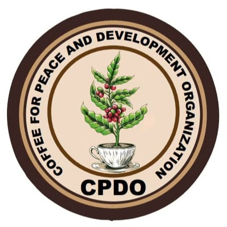
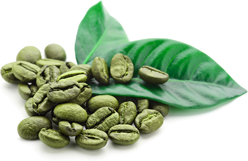

"Transforming South Sudan's coffee sector, one cup at a time. We empower local farmers, promote sustainable practices, and deliver high-quality organic coffee."


NNS Coffee Association was founded on April 15, 2023, with a
mission to enhance coffee farming practices, establish a reliable
market, and expand into regional and international markets
We produce and process high-quality organic excelsa coffee in
Nzara and Yambio, working closely with local traditional
farmers.
Learn more about our growing and roasting
processes or shop our high-quality organic coffee beans now.